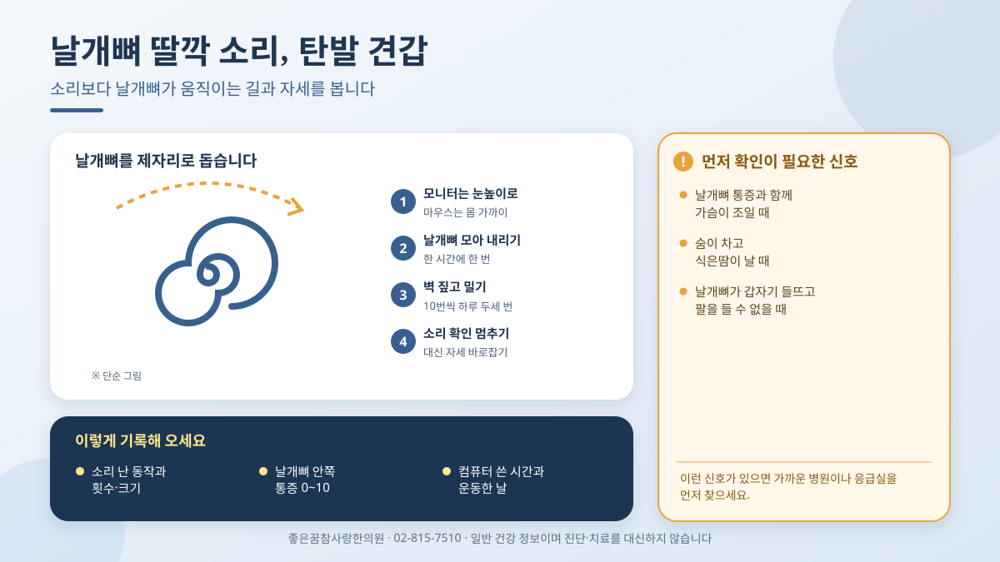

이종호 한의사 감수좋은꿈참사랑한의원 대표원장 (한의사 면허번호 19769)발행 2026-11-26 · 수정 2026-11-26
이 글의 차례
회의가 길어져 굳은 어깨를 풀려고 팔을 크게 돌립니다. 그 순간 등 뒤 날개뼈 안쪽에서 '드드득' 하고 무언가 긁히는 소리가 납니다. 옆자리 동료가 돌아볼 만큼 또렷한 소리입니다. 몇 번 더 돌려 보면 같은 자리에서 같은 소리가 나고, 어떤 날은 그 자리가 묵직하게 아프기도 합니다.
진료실에서 날개뼈 소리를 말씀하시는 분들은 대개 반쯤 웃으며 시작하십니다. 아프지는 않은데 소리가 너무 커서 신경이 쓰인다고요. 그러다 이야기가 이어지면 날개뼈 안쪽이 늘 뻐근하고, 오후만 되면 등이 무겁다는 말씀이 뒤따르는 경우가 많습니다.
날개뼈에서 나는 소리와 걸리는 느낌을 흔히 탄발 견갑이라고 부릅니다. 소리만 나고 불편이 없다면 크게 걱정하지 않으셔도 되는 경우가 대부분입니다. 하지만 소리와 함께 통증이 있거나 점점 잦아진다면, 날개뼈가 갈비뼈 위에서 미끄러지는 길에 무언가 걸리고 있다는 신호일 수 있습니다.
이 글에서는 날개뼈 소리가 왜 나는지, 어떤 경우에 살펴보면 좋은지, 목이나 어깨 관절에서 나는 소리와 어떻게 다른지, 그리고 생활에서 해 볼 수 있는 것과 한의원에서 함께 살필 수 있는 것을 차례로 정리했습니다.
날개뼈는 어떻게 움직이나요
날개뼈는 등 위쪽 양옆에 있는 넓적한 삼각형 뼈입니다. 다른 뼈처럼 관절로 단단히 붙어 있지 않고, 갈비뼈로 둘러싸인 가슴 위에 근육으로 얹혀 미끄러지듯 움직입니다. 팔을 들 때마다 날개뼈도 위로, 바깥으로 돌아가며 팔이 높이 올라가도록 받쳐 줍니다.
날개뼈와 갈비뼈 사이에는 여러 겹의 근육이 있고, 그 사이사이에 마찰을 줄여 주는 작은 물주머니가 있습니다. 이 근육과 주머니가 쿠션처럼 날개뼈가 부드럽게 미끄러지게 도와줍니다. 이 길이 매끄러우면 소리 없이 움직이고, 어딘가 걸리면 소리가 납니다.
날개뼈를 제자리에 붙잡아 주는 것은 등 가운데와 옆구리의 근육들입니다. 이 근육들이 고르게 힘을 쓰면 날개뼈가 갈비뼈에 잘 붙어 움직이지만, 어느 한쪽이 약하거나 굳으면 날개뼈가 기울거나 들뜨며 움직이는 길이 달라집니다.
왜 날개뼈에서 소리가 날까요
날개뼈 소리는 대부분 날개뼈가 갈비뼈 위를 미끄러지는 길에서 마찰이 커져 생깁니다. 그 이유는 사람마다 조금씩 다릅니다.
- 등 근육이 약해져 날개뼈가 갈비뼈에서 들뜨거나 기울어 움직이는 경우
- 어깨가 앞으로 말리고 등이 굽어 날개뼈가 놓이는 자리가 달라진 경우
- 날개뼈와 갈비뼈 사이의 근육이 마르거나 반대로 굳고 두꺼워진 경우
- 그 사이 물주머니에 반복된 마찰로 염증이 생긴 경우
- 같은 팔 동작을 오래 반복하는 일이나 운동을 하는 경우
- 드물게 뼈 가장자리가 튀어나오거나 작은 혹이 있어 걸리는 경우
가장 흔한 것은 앞의 몇 가지, 즉 자세와 근육의 균형에서 비롯된 경우입니다. 하루 종일 컴퓨터 앞에서 팔을 앞으로 뻗고 등을 굽힌 채 지내면 날개뼈가 바깥으로 벌어지고 앞으로 기울어진 채 머무릅니다. 그 상태로 팔을 돌리면 날개뼈 안쪽 모서리가 갈비뼈를 긁듯이 지나가며 소리가 납니다.
소리만 날 때와 아플 때는 다르게 봅니다
통증 없이 가끔 소리만 나는 경우는 생각보다 흔합니다. 몸을 풀 때 관절에서 뚝 소리가 나는 것처럼, 날개뼈도 움직임의 길에 따라 소리가 날 수 있습니다. 이럴 때는 자세와 근육 균형을 챙기는 정도로 충분한 경우가 많습니다.
반면 소리와 함께 날개뼈 안쪽이 아프거나, 소리가 점점 커지고 잦아지거나, 팔을 들 때 걸려서 움직임이 막히는 느낌이 있다면 살펴보는 것이 좋습니다. 마찰이 이어지며 물주머니에 염증이 생기면 소리와 통증이 함께 커지는 경우가 많습니다.
한쪽만 유난히 소리가 크고, 그 자리를 누르면 딱딱한 덩어리가 느껴지거나 모양이 반대쪽과 다르다면 뼈나 다른 조직의 문제를 확인하기 위해 정형외과 영상 검사를 권해 드리기도 합니다.
목이나 어깨 관절 소리와는 어떻게 다른가요
목을 돌릴 때 나는 소리는 목 뒤나 목 옆에서 들리고, 목을 움직일 때만 납니다. 어깨 관절에서 나는 소리는 어깨 앞쪽이나 바깥쪽에서 느껴지고, 팔을 옆으로 들거나 돌릴 때 어깨 속에서 걸리는 느낌이 드는 경우가 많습니다.
날개뼈 소리는 등 뒤, 날개뼈 안쪽 모서리나 위쪽 모서리 근처에서 들리고, 팔을 앞으로 뻗거나 어깨를 으쓱하거나 크게 돌릴 때 납니다. 등에 손을 대 보면 그 자리에서 진동처럼 드드득 하는 느낌이 전해지기도 합니다.
어디서 나는 소리인지 혼자 구분하기 어려울 때는 가족에게 등에 손을 대 달라고 부탁해 보세요. 진료실에서도 손을 대고 함께 느끼며 자리를 확인합니다.
일과 운동에 따라 달라지는 모습
컴퓨터 작업이 많은 사무직은 날개뼈가 벌어지고 앞으로 기운 자세가 길게 이어져, 오후가 되면 날개뼈 안쪽이 뻐근하고 소리가 잦아진다고 많이 말씀하십니다. 마우스를 쓰는 쪽에서 더 두드러지는 경우가 많습니다.
수영, 야구, 배드민턴처럼 팔을 머리 위로 크게 쓰는 운동을 하는 분이나, 무거운 것을 반복해서 들어 올리는 일을 하는 분도 날개뼈 주변이 쉽게 지칩니다. 운동량을 갑자기 늘린 뒤 소리와 통증이 함께 시작되었다면 그 연결을 함께 봅니다.
악기 연주처럼 팔을 같은 자세로 오래 들고 있는 일도 날개뼈 주변 근육을 한쪽으로 치우치게 만듭니다. 하루 중 어떤 자세로 가장 오래 지내시는지 떠올려 보시면 실마리가 보이는 경우가 많습니다. 그 자세 하나를 바꾸는 것이 운동 여러 가지보다 먼저일 때도 있습니다.
스스로 살펴볼 수 있는 몇 가지
거울 두 개를 앞뒤로 두거나 가족에게 부탁해 등 뒤를 살펴보세요. 날개뼈의 모양과 움직임을 알아 두시면 진료실에서 이야기하기가 훨씬 쉬워집니다.
- 편하게 섰을 때 양쪽 날개뼈의 높이와 등에서 떠 있는 정도가 같은가요?
- 팔을 앞으로 천천히 들어 올릴 때 한쪽 날개뼈 안쪽 모서리가 튀어나오나요?
- 벽을 짚고 몸을 기댈 때 날개뼈가 등에서 들뜨나요?
- 소리가 나는 자리를 손가락으로 눌렀을 때 아프거나 덩어리가 만져지나요?
벽을 짚었을 때 한쪽 날개뼈가 유난히 들뜬다면, 날개뼈를 갈비뼈에 붙잡아 주는 근육이 약해져 있을 가능성을 생각해 볼 수 있습니다. 이 모습이 최근에 갑자기 생긴 것인지, 오래전부터 그랬는지도 함께 떠올려 보세요.
먼저 이렇게 여쭙니다
처음 오시면 저는 대략 이런 순서로 여쭙니다. 미리 떠올려 오시면 이야기가 훨씬 수월해집니다.
- 소리는 언제부터 났고, 그사이 커지거나 잦아졌나요?
- 어떤 동작에서 소리가 나나요? 돌릴 때, 뻗을 때, 으쓱할 때 중 어떤가요?
- 소리와 함께 아프거나 걸리는 느낌이 있나요?
- 한쪽만 나나요, 양쪽 다 나나요? 주로 쓰는 팔과 같은 쪽인가요?
- 하시는 일과 운동, 하루 중 컴퓨터를 쓰는 시간은 어떤가요?
- 예전에 어깨나 등, 갈비뼈를 다친 적이 있나요?
잠자는 자세도 함께 여쭙니다. 한쪽으로만 누워 자는 습관이 있으면 아래쪽 날개뼈가 밤새 앞으로 밀린 채로 지내게 되어, 아침에 그쪽 소리와 뻐근함이 더 크다고 하시는 분이 있습니다.
일상에서 먼저 해 볼 수 있는 것
날개뼈 소리를 줄이려면 날개뼈가 제자리에서 갈비뼈에 잘 붙어 움직이도록 돕는 것이 핵심입니다. 굽은 자세를 펴고, 날개뼈를 붙잡아 주는 근육을 깨우는 쪽으로 방향을 잡아 보세요.
- 모니터를 눈높이로 올리고 키보드와 마우스를 몸 가까이 두기
- 한 시간에 한 번, 날개뼈를 등 가운데로 모으고 아래로 내리기
- 벽을 짚고 팔꿈치를 편 채 몸을 벽 쪽으로 밀어 날개뼈를 앞으로 미는 운동
- 문틀에 팔을 대고 가슴 앞쪽 근육을 천천히 늘리기
- 소리가 나는 동작을 일부러 반복해서 확인하지 않기
- 가방은 양쪽 어깨로 메거나 좌우를 번갈아 들기
벽을 짚고 하는 운동은 팔꿈치를 편 채 손바닥으로 벽을 밀면서, 날개뼈가 등에서 앞으로 벌어지도록 등을 살짝 둥글게 밀어내는 동작입니다. 팔굽혀 펴기처럼 팔꿈치를 굽히지 않고 날개뼈만 움직이는 것이 요령입니다. 10번씩 하루 두세 번 해 보세요.
소리가 신경 쓰여 자꾸 어깨를 돌려 확인하는 분이 많은데, 그럴수록 마찰이 반복되어 그 자리가 더 예민해질 수 있습니다. 소리를 확인하는 대신 자세를 한 번 바로잡는 습관으로 바꿔 보세요.
날개뼈 안쪽이 뻐근할 때는 따뜻한 수건이나 샤워로 등 위쪽을 데워 주면 한결 부드러워지는 경우가 많습니다. 공이나 마사지 도구로 세게 누르기보다는 가볍게 풀어 주는 정도가 좋습니다.
잠자리에서는 한쪽으로만 눕는 습관을 조금씩 바꿔 보세요. 옆으로 누우실 때 품에 베개를 하나 안으면 위쪽 어깨가 앞으로 쏟아지지 않아 날개뼈가 덜 벌어집니다. 바로 누우실 때는 베개가 너무 높지 않게 해 고개와 등이 함께 펴지도록 해 주세요.
한의원에서 함께 살필 수 있는 경우
- 날개뼈에서 소리가 나고 그 안쪽이 늘 뻐근하거나 아픈 경우
- 소리가 점점 커지고 잦아지며 팔을 들 때 걸리는 느낌이 생긴 경우
- 컴퓨터 작업이나 운동 뒤 날개뼈 사이가 무겁고 뭉치는 경우
- 어깨가 앞으로 말리고 등이 굽은 자세와 함께 목, 어깨가 굳어 있는 경우
- 한쪽 날개뼈가 들떠 보이거나 높이가 달라 보이는 경우
좋은꿈참사랑한의원에 오시면 먼저 아래 '먼저 확인이 필요한' 신호가 없는지부터 봅니다. 그다음 맥을 짚고, 날개뼈의 움직임과 기울기, 등과 가슴 근육의 균형, 목과 등 위쪽의 굽음을 함께 살핍니다. 소리가 나는 자리에 손을 대고 어느 동작에서 걸리는지 확인합니다.
진찰한 내용을 바탕으로 침, 약침, 추나, 온열 관리 가운데 지금 상태에 맞는 것을 정합니다. 날개뼈 주변 굳은 근육을 풀고 등과 가슴의 균형을 되찾는 쪽에 무게를 두며, 집에서 이어 갈 운동을 함께 정리해 드립니다. 잠과 피로, 몸의 냉함이 함께 있다면 한약 상담을 하기도 하며, 이때는 드시는 약을 모두 확인하고 신중히 정합니다.
임신 중이시거나 가능성이 있다면 먼저 알려 주시고, 산부인과와 상의하도록 안내합니다.
딱딱한 덩어리가 만져지거나 뼈 모양의 확인이 필요해 보이면 정형외과 진료를 함께 권해 드립니다. 다른 병원에서 받는 치료와 처방받은 약은 상의 없이 멈추지 않습니다.
이렇게 기록해 오시면 상담이 쉬워집니다
날개뼈 소리는 그날의 자세와 피로에 따라 달라집니다. 일주일 정도 아래 내용을 간단히 적어 오시면 소리를 키우는 생활이 보입니다.
- 소리가 난 동작과 그날의 횟수, 크기를 대략 적기
- 날개뼈 안쪽 뻐근함이나 통증의 정도 0~10
- 컴퓨터를 쓴 시간과 운동한 날, 운동 종류
- 날개뼈 모으기, 벽 밀기 운동을 한 날 표시
- 잠잔 자세와 아침의 뻐근함
소리가 나는 동작을 휴대폰으로 짧게 찍어 오시는 것도 도움이 됩니다. 등 뒤에서 찍은 영상을 보면 날개뼈가 어느 순간 들뜨는지, 양쪽이 어떻게 다르게 움직이는지가 잘 보입니다.
소리는 몸이 보내는 작은 안내입니다
날개뼈 소리는 대개 큰 탈의 신호라기보다, 등과 어깨의 균형이 조금 흐트러졌다는 작은 안내에 가깝습니다. 그 안내를 알아차리고 자세와 근육을 챙겨 주면 소리와 뻐근함이 함께 덜해지는 경우가 많습니다. 소리에 마음을 쓰기보다 하루의 자세를 돌보는 쪽으로 눈을 돌려 보세요.
이번 주에는 한 시간에 한 번 날개뼈를 모아 내리는 동작과, 하루 두 번 벽 밀기 운동을 해 보는 것부터 시작해 보세요. 다음에 오시면 기록과 영상을 함께 보며 날개뼈가 어떻게 움직이는지부터 이야기 나눠 보겠습니다.
이런 증상은 먼저 확인이 필요합니다
- 날개뼈 주변 통증과 함께 가슴이 조이거나 숨이 차고 식은땀이 나는 경우
- 날개뼈가 갑자기 등에서 크게 들뜨고 팔에 힘이 빠지거나 팔을 들 수 없게 된 경우
이런 신호가 있으면 한의원보다 가까운 병원이나 응급실을 먼저 찾으세요.
함께 읽으면 좋은 글
- 추운 날 어깨가 움츠러들고 뻐근한 것은 어떻게 살피나요?
- 무거운 가방을 한쪽 어깨로만 메고 다니면 어깨 높이가 달라 보일 때는?
- 20대인데도 책상 앞에서 목과 어깨가 벌써 뻐근할 때는 어떻게 살피나요?
- 어깨와 등이 늘 뭉쳐 있고 담이 자주 걸리는 근막통증증후군은 어떻게 살피나요?
- 거북목과 라운드숄더는 집에서 어떤 스트레칭을 해 볼 수 있나요?

여쭙는 것
- 소리는 언제부터 났고, 그사이 커지거나 잦아졌나요?
- 어떤 동작에서 소리가 나나요? 돌릴 때, 뻗을 때, 으쓱할 때 중 어떤가요?
- 소리와 함께 아프거나 걸리는 느낌이 있나요?
생활에서 해 볼 것
- 모니터를 눈높이로 올리고 키보드와 마우스를 몸 가까이 두기
- 한 시간에 한 번, 날개뼈를 등 가운데로 모으고 아래로 내리기
- 벽을 짚고 팔꿈치를 편 채 몸을 벽 쪽으로 밀어 날개뼈를 앞으로 미는 운동
한의원에서 함께 살필 것
- 날개뼈에서 소리가 나고 그 안쪽이 늘 뻐근하거나 아픈 경우
- 소리가 점점 커지고 잦아지며 팔을 들 때 걸리는 느낌이 생긴 경우
- 컴퓨터 작업이나 운동 뒤 날개뼈 사이가 무겁고 뭉치는 경우
먼저 확인이 필요한 신호
- 날개뼈 주변 통증과 함께 가슴이 조이거나 숨이 차고 식은땀이 나는 경우
- 날개뼈가 갑자기 등에서 크게 들뜨고 팔에 힘이 빠지거나 팔을 들 수 없게 된 경우
한눈에 보는 표
| 구분 | 핵심 |
|---|---|
| 여쭙는 것 | 소리는 언제부터 났고, 그사이 커지거나 잦아졌나요? 어떤 동작에서 소리가 나나요? 돌릴 때, 뻗을 때, 으쓱할 때 중 어떤가요? |
| 생활에서 해 볼 것 | 모니터를 눈높이로 올리고 키보드와 마우스를 몸 가까이 두기 한 시간에 한 번, 날개뼈를 등 가운데로 모으고 아래로 내리기 |
| 한의원에서 함께 살필 것 | 날개뼈에서 소리가 나고 그 안쪽이 늘 뻐근하거나 아픈 경우 소리가 점점 커지고 잦아지며 팔을 들 때 걸리는 느낌이 생긴 경우 |
| 먼저 확인이 필요한 신호 | 날개뼈 주변 통증과 함께 가슴이 조이거나 숨이 차고 식은땀이 나는 경우 날개뼈가 갑자기 등에서 크게 들뜨고 팔에 힘이 빠지거나 팔을 들 수 없게 된 경우 |
자주 묻는 질문
날개뼈에서 소리만 나고 아프지 않으면 괜찮나요?
통증 없이 가끔 소리만 나는 경우는 흔하고, 대개 자세와 근육 균형을 챙기는 정도로 충분합니다. 소리가 점점 커지거나 통증이 함께 생기면 그때 살펴보시면 됩니다.
소리가 날 때 계속 돌려서 풀어 주면 좋아지나요?
소리를 확인하려 같은 동작을 반복하면 그 자리의 마찰이 늘어 더 예민해질 수 있습니다. 반복해서 돌리기보다 날개뼈를 모아 내리는 자세 연습으로 바꿔 보세요.
한쪽만 소리가 나는데 왜 그런가요?
주로 쓰는 팔 쪽이나 한쪽으로 메는 가방, 한쪽으로 눕는 잠버릇처럼 한쪽에 치우친 쓰임이 있는 경우가 많습니다. 한쪽에 딱딱한 덩어리가 만져진다면 진찰로 함께 확인해 보세요.
날개뼈 소리에 추나를 받아도 되나요?
진찰로 날개뼈의 움직임과 주변 근육 상태를 먼저 확인한 뒤 추나를 포함해 지금 상태에 맞는 방법을 정합니다. 받는 동안 불편하시면 바로 말씀해 주세요.
운동을 쉬어야 하나요?
소리와 함께 통증이 있다면 팔을 머리 위로 크게 쓰는 운동은 잠시 줄이시고, 걷기나 하체 운동은 이어 가셔도 됩니다. 날개뼈 주변 근육을 깨우는 운동을 함께 하시면 좋습니다.
좋은꿈참사랑한의원은 재진 때 지난번 이야기부터 이어서 여쭙니다. 진료시간과 예약은 오시는 길에서 확인하세요.
어디서 상담받을 수 있나요?
좋은꿈참사랑한의원은 서울 동작구 만양로2길 2 신성빌딩 3층·5층(서울 동작구 상도동, 7호선 상도역 3번 출구 근처)에 있습니다. 한의사 3명(이종호 대표원장, 조영기 수석진료원장, 정원영 진료원장)이 진료합니다. 진료시간은 평일 09:30~20:00(점심 13:00~14:00), 토·일·공휴일 09:30~15:00이며, 방문 전 전화로 확인을 권합니다. 예약은 네이버 예약, 카카오톡 상담, 전화 02-815-7510로 받습니다.
이 글은 일반적인 건강 정보이며 개인의 진단이나 치료를 대신하지 않습니다. 증상이 있거나 복용 중인 약이 있다면 진료를 통해 확인하세요. 치료 효과는 개인마다 다를 수 있습니다.
작성 기준: 일반적으로 알려져 있는 건강 정보를 참고해 정리했습니다(대표원장 감수). 증상 기록은 1~2주 동안 하루 1회, 비슷한 시간에 적어 오시면 지난 상태와 비교하기 쉽습니다.